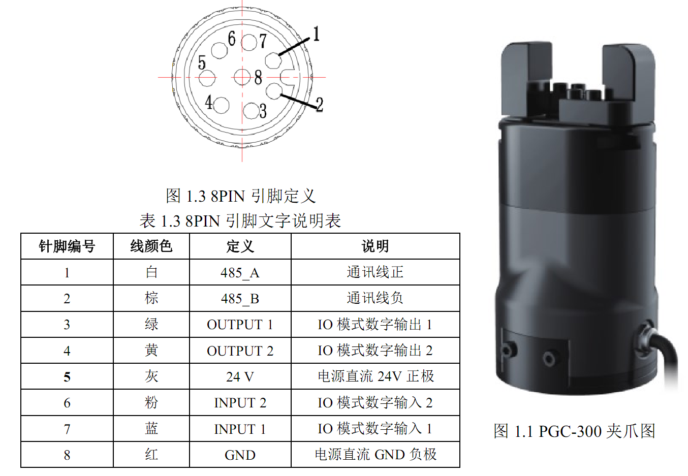

这个电动夹爪是申请的样品来短时间测试(PS:后来想测试个上银的XEG48的，那边没现货，如果想测试的话只能购买，并且货期较长。另外一个XEG32也是无法申请测试，这个代理说是上海总部的，如果这样那看来这款销量不好，要不然连样品都不备)，只是简单的使用了它的RS485控制方式进行夹持档案盒。另外也使用过两款大寰DH的夹爪，都是简单测试，所以也就是记录下相关信息。
1. XEG64是外接驱动盒，而大寰是内置驱动+外接通信转接盒，大寰的如果不使用IO或者RS485则需要“通信转接盒”进行协议转换。这样比较下来，XEG64若驱动盒不放在机器人末端，则可以减轻负载，但是布线就会麻烦些。大寰的则是增加了末端负载提高布线便利度。
左边是上银HIWIN XEG-64系统结构图，右边是大寰DH PGC300 连接图：

以下是从XEG说明书上抄的：
- 全系列采用含编码器之步进马达，具有状态回报、异常警报、对象辨识等讯号输出。
- 使用微型双旋直线模块，实现高速化、高精度、高刚性、高效率与体积小之优势。
- 具备原点复归与夹持力模型建立、自适应抓取与模型调整、节能降温与尺寸量测等智能功能。
- 移动方向、行程、力量、速度等皆可设定，且操作软件具有使用历程记录之功能。
- 支持序列通讯与I/O讯号通讯，使用上更加弹性与便利。
2. 虽然说是可以在40%~100%夹持力以1%的为单位设置，但是由于是靠步进电机电流进行控制的，精度方面不是准确的。实际应用时可以慢慢由小到大进行测试。
3. 通过夹持力变化实现“外形尺寸检测、辨识”，这个算是个创新点....
4. 两个滑块通过正反丝杆控制，可以保证两个滑块与中心的距离相同。当然也可以用两个电机、同步带、齿轮等方式进行传动，具体优劣我也不清楚啦。。。